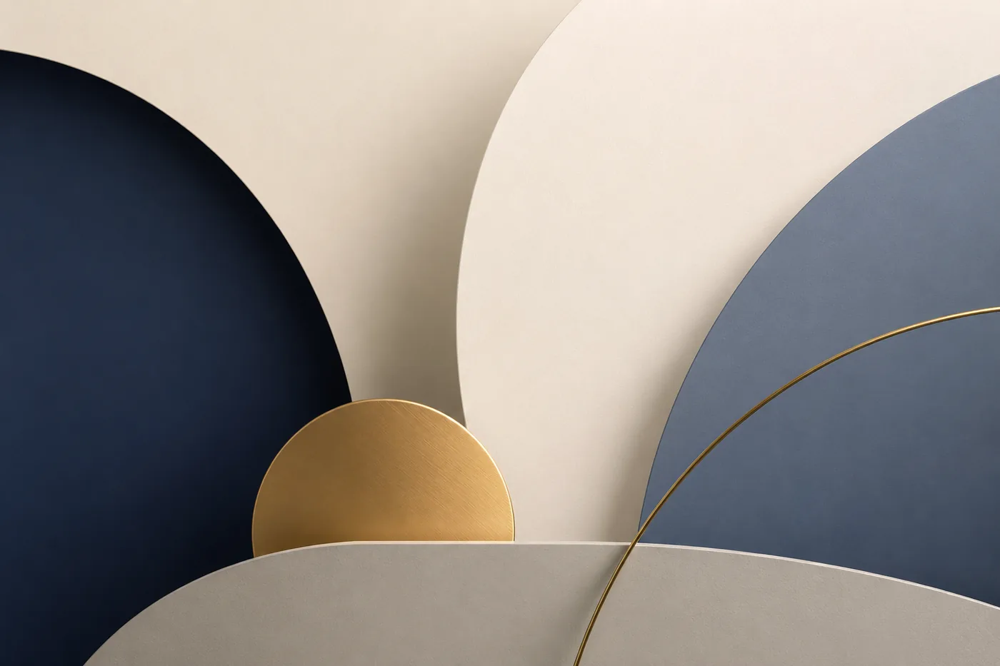
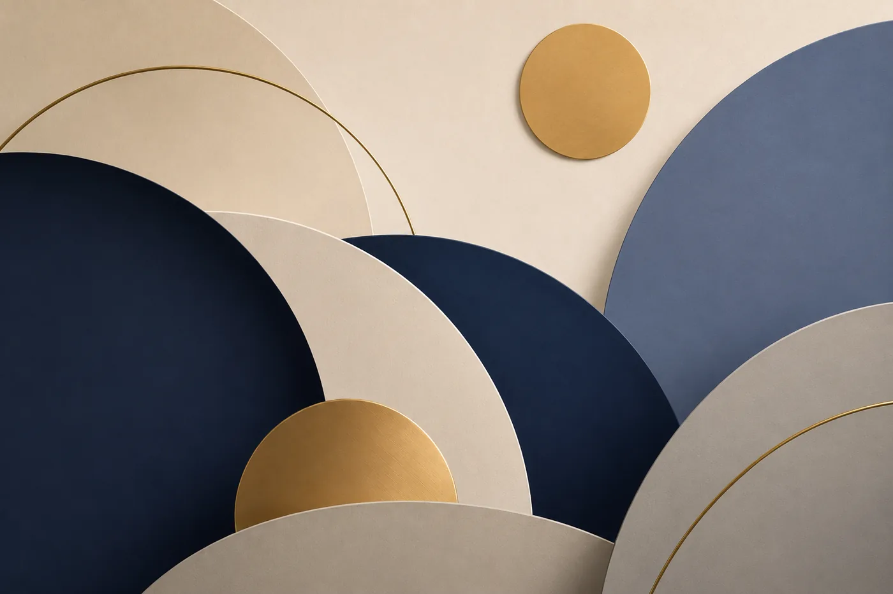
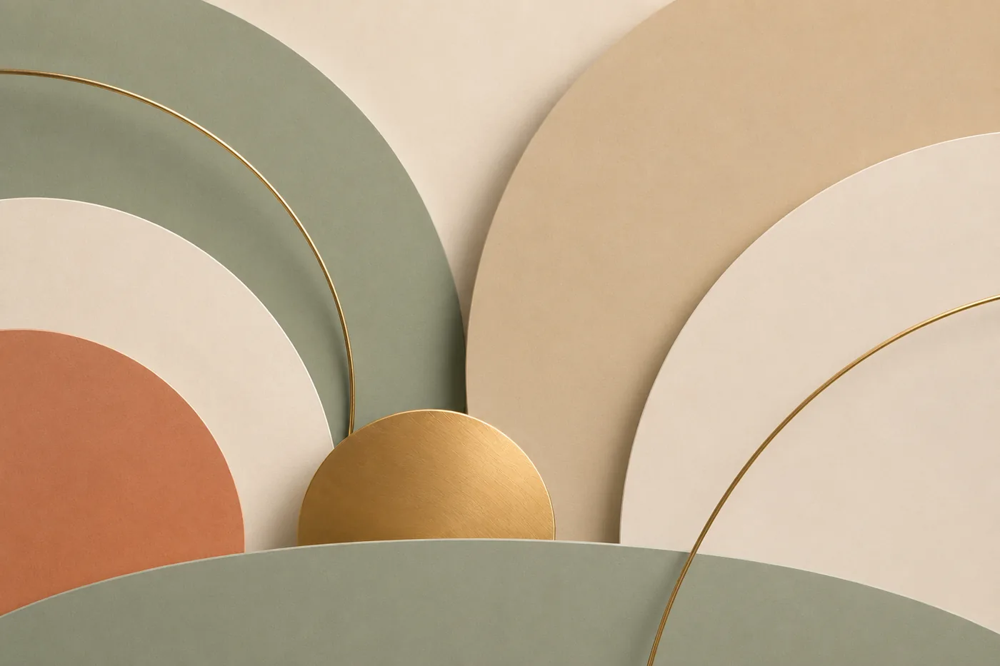
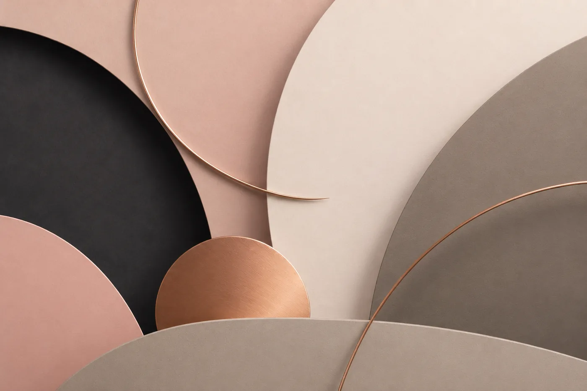
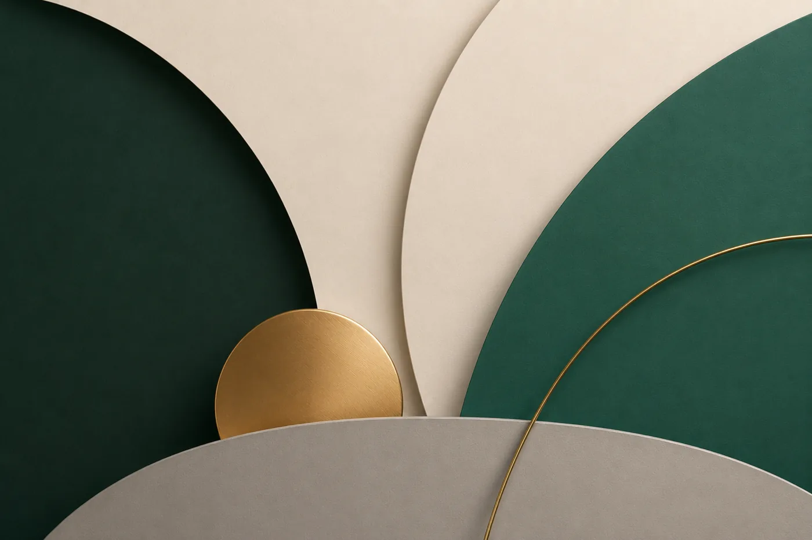
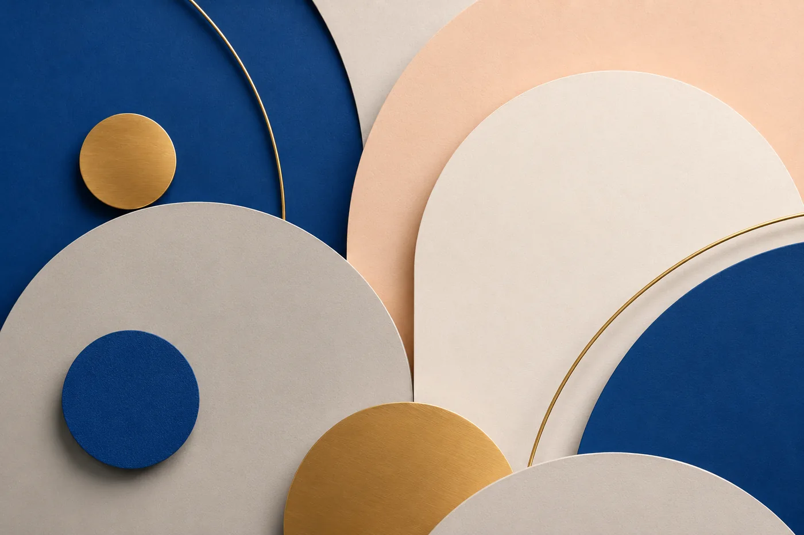
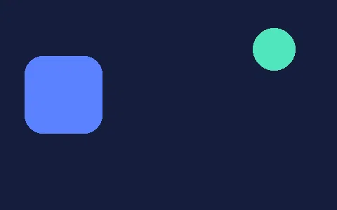
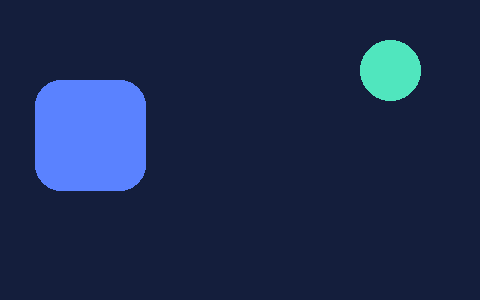

Slot
위아래로 굴러가는 오도미터.
0
34개의 모션 모듈을 한 페이지에서 시연합니다.각 카드의 옵션을 조정하고, 완성된 설정을 HTML/JS 코드로 가져가세요.
숫자를 보여주는 다섯 가지 방식입니다.
Pop은 카운트업 없이 완성된 숫자를 한 자리씩 내려놓습니다.
위아래로 굴러가는 오도미터.
0이 아니라 특정 값에서 시작해 다른 값으로 증가·감소합니다. 34,000 → 10,000 할인 표기처럼 from → to를 지정하세요.
실제 값이 0부터 목표값까지 증가. from을 주면 특정 값에서 시작합니다.
세로 이동 없이 0–9 글리프만 교체.
완성된 숫자가 큰 상태로 나타나 순서대로 정착합니다. 정착 기준(상·중·하)은 옵션입니다.
전광판처럼 숫자가 반으로 접히며 넘어갑니다. 타일 배경은 옵션.
실제 시각이 초 단위로 흐릅니다. 콜론은 초에 맞춰 깜빡이고, 숫자가 바뀌는 방식은 롤 · 깜빡임 · 즉시 교체 중에서 고릅니다.
지정한 시점까지 남은 시간을 셉니다. 하루 이상 남으면 일수가 함께 붙고, since를 주면 반대로 지난 시간을 셉니다.
타일 없이 글자만 접히는 미니멀 플립.
화면 전체를 덮는 로딩 연출입니다. 수동 갱신부터 Promise, 스트리밍 fetch까지 실제 진행률을 그대로 연결합니다.
비주얼은 CSS 클래스와 변수로 다시 칠할 수 있고, renderUI 훅이면 UI를 통째로 바꿀 수도 있습니다.
이미지가 로드되는 동안 재생되는 전환입니다.
GIF · WebP · APNG 같은 움직이는 이미지도 멈추지 않습니다.
Pixel Mosaic 엔진. 요소 크기에서 자동으로 픽셀 단계를 만들고 균등 시간으로 해상도가 올라갑니다. 애니메이션 이미지도 재생 유지.

명시적인 픽셀 블록 크기 배열(px)과 단계별 시간.

블러+미세 노이즈 상태에서 위→아래로 스캔되며 선명해짐. 사각 모자이크 없음.

방향성 없이 전체 노이즈와 블러가 점차 사라지며 원본이 선명해짐.

Blur-up과 달리 이미지가 아닌 shimmer UI placeholder. 최소 1.2초 표시.

그라디언트 이동 대신 밝기가 반복되는 placeholder.

실제 이미지 레이어가 흐린 상태에서 선명해지는 이미지 전환.
슬라이스가 어긋나고 블랙아웃이 번쩍이다 정착하는 로드 연출.
인화지가 현상되듯 과노출 상태에서 서서히 색이 차오릅니다.
컨테이너보다 긴 텍스트를 다루는 여덟 가지 모드입니다.
이동·전환·대기 타이밍을 모두 옵션으로 제어할 수 있습니다.
같은 제목이 이어지는 연속 marquee.
끝에 도착한 뒤 실제로 반대 방향으로 돌아옴.
끝에서 mask-out → 숨은 상태로 시작점 이동 → mask-in. 뒤로 이동하지 않음.
한 번 이동하고 마지막에 정지.
페이지 단위 텍스트가 지정한 방향의 마스크로 교체됩니다.
페이지 단위 텍스트가 전광판처럼 위/아래로 플립되며 교체됩니다.
가로 이동(마퀴) 없이 동작합니다 — 첫 구간이 잠시 표시된 뒤, 나머지 구간들이 순서대로 세로 롤링으로만 교체됩니다.
글자들이 노이즈처럼 흩어졌다가 다음 구간으로 재조립됩니다.
목록 아이템이 세로로 순환합니다. div·span 등 HTML 마크업 아이템을 그대로 지원합니다.
포인터를 따라오는 광원과 3D 틸트.
표면 반사, 외곽 광선, 할로를 원하는 대로 겹쳐 쓸 수 있습니다.
Glow 160px · Tilt 7/11°
Glow 90px · Sensitivity 1.45
표면 반사와 외곽 광택을 각각 켜고 색상·감도를 조절합니다.
카드 바깥으로 새어 나오는 회전 conic 글로우 — 오리지널 효과 복원.
외곽선을 따라 흐르는 그라디언트 광선 — 오리지널 보더 글로우.
포인터와 입력에 반응하는 피드백 모듈입니다.
Magnetic, Ripple, Vibration, Mouse Parallax, Compass가 여기에 있습니다.
클릭 지점에서 원이 퍼지는 Material 스타일.
탭하면 이름에 맞는 진동 패턴이 재생됩니다(안드로이드 크롬 등 지원 기기). 타이밍 조합으로 톡톡·드르륵 같은 질감을 만듭니다.
바늘이 포인터를 조준해 회전합니다. compassRange로 X축 매핑 회전도 가능.
타이포그래피를 움직이는 모듈들입니다.
어떤 카드든 첫 프레임부터 다시 돌려볼 수 있습니다.
글자가 3D로 회전하며 등장합니다. flip·scale·blur 선택 가능.
문장이 글자 단위로 교체됩니다 — 슬라이드 업 + 페이드 아웃, 스태거 입장.
caret(|) 표시 여부와 한글 자음·모음 조합 타이핑을 옵션으로 선택합니다.
slide-up · blur · dissolve(노이즈) · shimmer 등.
글자가 순서대로 나타나며 랜덤 글리프로 깜빡인 뒤 확정됩니다. 텍스트에서 자동 생성.
글자마다 불규칙하게 점멸하며 켜집니다. flickerLoop로 상시 잔플리커 유지.
세 겹의 색상 분리 레이어와 간헐적 슬라이스 버스트.
콘텐츠가 화면에 들어오는 순간을 연출합니다.
방향 슬라이드부터 마스크, 시계 와이프까지 프리셋으로 고릅니다.
열 가지 화면 전환 커버입니다.
방향·색·조각 수·스태거를 옵션으로 조절합니다.
시계 바늘이 돌 듯 원형 마스크가 채워지며 콘텐츠가 드러납니다.
모션을 강제하지 않고 진입 시 원하는 CSS class만 on/off.
스크롤의 방향, 속도, 진행률에 반응합니다.
핀 고정과 가로 스크롤, 이미지 시퀀스까지 이 섹션에 모았습니다.
반복되는 작업과 정보 단절.
흐름을 자동화하고 인터랙션을 모듈화.
재사용 가능한 MotionKit.
콘텐츠가 고정된 화면 안으로 등장합니다.
이전 항목은 뒤로 물러나며 흐려집니다.
스크롤 진행률로 전체 시퀀스를 제어합니다.
ScrollTrigger fallback 또는 CSS animation timeline에 연결.
enableSmooth(), disableSmooth(), toggleSmooth(), scrollTo()
읽은 만큼 채워지는 바입니다. 페이지 상단에 고정하거나, 이 카드처럼 요소 안에 넣을 수 있습니다.
원형 인디케이터입니다. 퍼센트 표시, 맨 위로 이동 버튼, 특정 요소 추적을 옵션으로 켭니다. 우측 하단 플로팅 링도 이 모듈입니다.
휠 · 스와이프 · 키보드 · 도트로 한 단락씩 이동하는 fullpage 컨테이너입니다. 끝에 도달하면 페이지 스크롤로 자연스럽게 이어지고, 창 크기가 바뀌어도 즉시 맞춰집니다.
A→B→C는 가로로, C→D는 세로로 넘어갑니다. 섹션마다 data-mk-fp-axis="x|y"로 진입 방향을 지정합니다.
슬라이드 구간과 일반 스크롤을 한 페이지에 섞습니다. 마지막 장에서 더 내리면 아래 콘텐츠로 자연스럽게 풀립니다.
뷰어와 슬라이더, 주변광, 인터랙티브 마스크까지 미디어를 다루는 모듈들입니다.
하나의 이미지에 여러 모듈을 겹쳐 쓸 수도 있습니다.
전체 화면 그룹 뷰어 — 캡션·메타데이터, 확대·이동·미니맵, 커스텀 UI 훅.
단일 transform 경로로 드래그·키보드·버튼 이동이 중복 실행되지 않습니다.
세 모듈을 한 이미지에 조합해도 애니메이션 재생이 유지됩니다.


재생 프레임을 저해상도로 샘플링해 미디어 주변광을 만듭니다.
로딩과 무관한 상시 효과 — 색수차·슬라이스·스캔라인 버스트가 랜덤 간격으로 발생합니다(hover 트리거 옵션).
같은 구도의 두 이미지 — 포인터가 지나간 곳만 브러시 마스크로 두 번째 이미지가 드러납니다. 잔상 유지(persist)·치유 속도·퍼짐·블러 모두 옵션.
커서 프리셋 11종.
원하는 영역에만 적용할 수 있고, 터치 기기에서는 알아서 꺼집니다.
점은 즉시, 링은 탄성으로 따라옵니다. 호버 시 링은 유지되고 안쪽 점만 커집니다.
커서 주위를 도는 원형 텍스트. 호버 시 중앙 점만 확대됩니다.
글자들이 타원 궤도를 돕니다. 링크·버튼에 다가가면 궤도가 정원으로 부풀어 오릅니다.
탄성 꼬리가 커서를 따라옵니다.
이동 궤적에 별 파티클이 흩날립니다.
글자들이 사슬처럼 이어 따라옵니다.
화면 전체 십자선 + 중심 점.
클릭 지점에서 스프라이트를 1회 재생합니다.
원하는 이미지를 커서로 씁니다. 링크 위에선 교체, 클릭하면 버스트가 재생됩니다.
임의의 HTML을 커서로 렌더링합니다.
포인터 위치에 작게 표시되는 + 크로스.
배포 계약으로 잠긴 34개의 공개 모듈입니다.
같은 사이트 안에서의 이동을 전체 리로드 없이 처리합니다. 아래 버튼으로 직접 확인해보세요.
빼고 싶은 링크에는 data-mk-no-transition 하나면 됩니다.